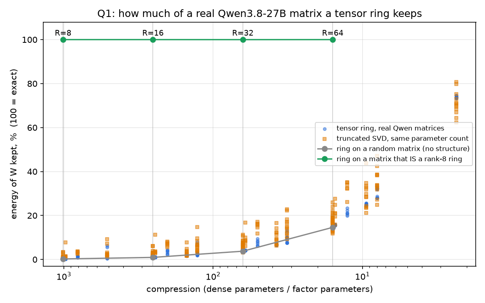
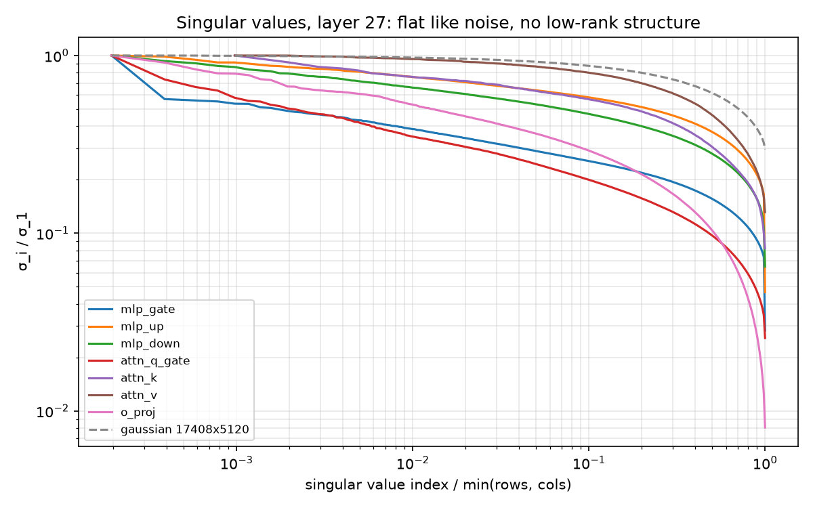
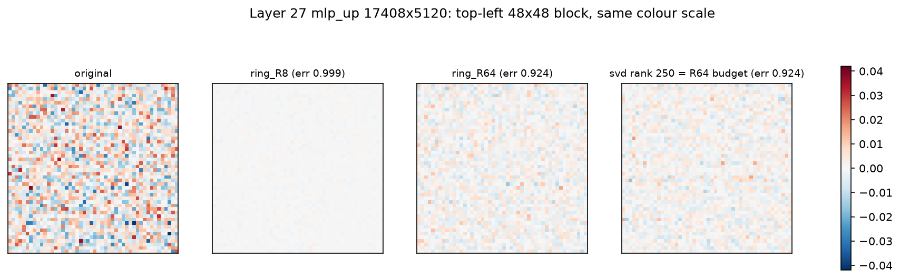
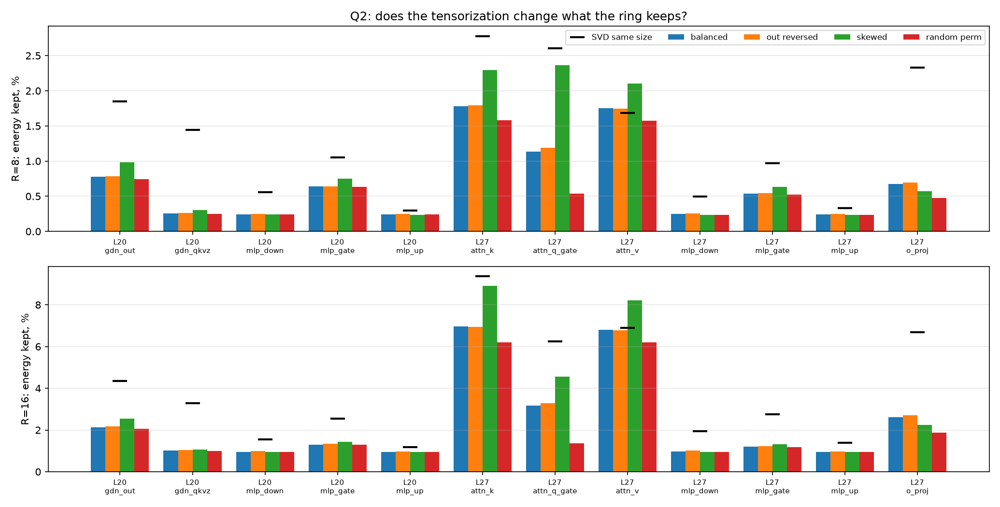

Два вопроса доклада (talk_ru.md, пункты 1–2 «что нужно от исследователей»):
Что сделано (H100, 2026-09-28): скачаны линейные слои 12 блоков модели Qwen/Qwen3.8-27B (0, 3, 8, 15, 20, 27, 32, 39, 44, 51, 56, 63; 6 full-attention, 6 Gated DeltaNet; 8.4 ГБ BF16, только на инстанс). Каждая матрица аппроксимирована кольцом из трёх ядер тем же способом, каким её потом считает наш кернел: TR-SVD, затем до 25 проходов TR-ALS (Zhao et al. 2016), FP32. 368 подгонок, 5 минут GPU.
Как читать числа. err = ‖W − W_кольцо‖ / ‖W‖: 0 — точно, 1 — ничего не осталось. «Сохранено» = 1 − err², доля «энергии» матрицы. «SVD того же размера» — лучшая возможная матрица низкого ранга с тем же числом параметров, что у кольца (теорема Эккарта–Янга, считается точно). Для изотропных входов err совпадает с относительной ошибкой выхода слоя.
| проверка | результат | что доказывает |
|---|---|---|
| матрица, которая является кольцом R = 8, подгоняется при R = 8 | err = 0.0000 | подгонка находит кольцо, если оно есть |
| случайная гауссова матрица того же размера, R = 8 / 16 / 32 / 64 | err 0.9988 / 0.9953 / 0.9810 / 0.9241 | нижняя граница: «структуры нет совсем» |
| наш BF16-кернел на подогнанных ядрах (слой 0, mlp_gate, R = 8, 8 токенов) | 2.8e-3 от кольца, 0.9971 от исходного слоя | кернел считает кольцо точно; потеря — в самой аппроксимации |

| матрица | R = 8 (×994) | R = 16 (×248) | R = 32 (×62) | R = 64 (×16) | ранг для 90% энергии |
|---|---|---|---|---|---|
| mlp_gate / up / down | сохранено 0.2–0.6% | 1.0–1.3% | 3.8–4.1% | 15% | ~3500 из 5120 |
| attn_q_gate | 1.3% | 3.5% | 7.6% | 21% | 2852 из 5120 |
| attn_k / attn_v (5120→1024) | 1.7% | 6.7% | 25% | 74% | ~630 из 1024 |
| o_proj / gdn_out | 0.7% | 2.1–2.8% | 7.6–9.9% | 28–32% | 2200–2500 из 5120 |
| gdn_qkvz | 0.3% | 1.0% | 4.1% | 16% | 3412 из 5120 |
(медианы по 12 слоям; полные числа — в таблицах ниже)


Вывод. Готовые веса нельзя сжать в кольцо R = 8 / 16 «после обучения»: от слоя останется шум. Качество при R = 8 / 16 возможно только если кольца обучать: учить модель в TR-формате или дообучать/дистиллировать после сжатия — это шаг 1 дорожной карты. Этот эксперимент его не отменяет, он показывает, что шаг обязателен и что начальная точка из TR-SVD почти ничего не даёт.

tools/qwen_fetch_layers.py скачивает их заново.python tools/qwen_fetch_layers.py --dir ~/qwen_w # 8.4 GiB, HTTP range requests
python tools/tr_quality.py --ranks 8,16,32,64 --out results/h100/qwen/quality.json
python tools/tr_quality_visual.py --layer 27 --out results/h100/qwen/quality_visual.json
python tools/tr_quality_report.py results/h100/qwen/quality.json > results/h100/qwen/QUALITY.md
python tools/tr_quality_charts.py results/h100/qwen/quality.json results/h100/qwen/quality_visual.json results/h100/qwen/quality
Source: results/h100/qwen/quality.json (NVIDIA H100 80GB HBM3), 12 layers (0, 3, 8, 15, 20, 27, 32, 39, 44, 51, 56, 63), TR-SVD init + up to 25 TR-ALS sweeps per fit, FP32. err = ||W − W_ring|| / ||W|| (relative Frobenius error; 0 = exact, 1 = nothing kept). kept = 1 − err² = share of the matrix's energy the approximation keeps. SVD same size = the best possible low-rank matrix with the same number of parameters as the ring (Eckart–Young, exact).
| matrix | R | ring err | SVD same size err |
|---|---|---|---|
| synthetic_ring_R8 | 8 | 0.0000 | 0.9992 |
| synthetic_ring_R8 | 16 | 0.0025 | 0.9962 |
| synthetic_ring_R8 | 32 | 0.0115 | 0.9846 |
| synthetic_ring_R8 | 64 | 0.0000 | 0.9409 |
| gaussian | 8 | 0.9988 | 0.9993 |
| gaussian | 16 | 0.9953 | 0.9966 |
| gaussian | 32 | 0.9810 | 0.9860 |
| gaussian | 64 | 0.9241 | 0.9457 |
A matrix that is a rank-8 ring is recovered (err ≈ 0 at R ≥ 8): the fitter works. A random Gaussian matrix (no structure) is the other extreme.
Layer 0 mlp_gate, R = 8, 8 tokens, BF16 kernel: kernel vs the ring it was given 2.8e-03 (numerics are fine); kernel vs the original layer 0.9971 (= ring vs original 0.9971: the loss is the approximation, not the kernel).
| matrix | shape | R=8 err (kept) / SVD same size | R=16 err (kept) / SVD same size | R=32 err (kept) / SVD same size | R=64 err (kept) / SVD same size | rank for 50% / 90% energy (of min side) |
|---|---|---|---|---|---|---|
| mlp_gate | 5120→17408 | 0.9969 (0.6%) / 0.9948 (1.0%) | 0.9936 (1.3%) / 0.9861 (2.8%) | 0.9794 (4.1%) / 0.9652 (6.8%) | 0.9222 (15.0%) / 0.9045 (18.2%) | 1163 / 3494 (of 5120) |
| mlp_up | 5120→17408 | 0.9988 (0.2%) / 0.9982 (0.4%) | 0.9952 (1.0%) / 0.9931 (1.4%) | 0.9808 (3.8%) / 0.9771 (4.5%) | 0.9235 (14.7%) / 0.9268 (14.1%) | 1274 / 3574 (of 5120) |
| mlp_down | 17408→5120 | 0.9988 (0.2%) / 0.9973 (0.5%) | 0.9952 (1.0%) / 0.9909 (1.8%) | 0.9807 (3.8%) / 0.9724 (5.4%) | 0.9231 (14.8%) / 0.9167 (16.0%) | 1205 / 3516 (of 5120) |
| attn_q_gate | 5120→12288 | 0.9935 (1.3%) / 0.9835 (3.3%) | 0.9821 (3.5%) / 0.9632 (7.2%) | 0.9613 (7.6%) / 0.9174 (15.8%) | 0.8882 (21.1%) / 0.8175 (33.2%) | 658 / 2852 (of 5120) |
| attn_k | 5120→1024 | 0.9914 (1.7%) / 0.9824 (3.5%) | 0.9660 (6.7%) / 0.9394 (11.8%) | 0.8669 (24.8%) / 0.8178 (33.1%) | 0.5114 (73.8%) / 0.5177 (73.2%) | 182 / 612 (of 1024) |
| attn_v | 5120→1024 | 0.9914 (1.7%) / 0.9911 (1.8%) | 0.9663 (6.6%) / 0.9646 (7.0%) | 0.8680 (24.7%) / 0.8722 (23.9%) | 0.5127 (73.7%) / 0.5689 (67.6%) | 230 / 658 (of 1024) |
| o_proj | 6144→5120 | 0.9964 (0.7%) / 0.9888 (2.2%) | 0.9861 (2.8%) / 0.9682 (6.3%) | 0.9492 (9.9%) / 0.9183 (15.7%) | 0.8220 (32.4%) / 0.7991 (36.1%) | 586 / 2205 (of 5120) |
| gdn_qkvz | 5120→16384 | 0.9987 (0.3%) / 0.9937 (1.3%) | 0.9948 (1.0%) / 0.9834 (3.3%) | 0.9794 (4.1%) / 0.9564 (8.5%) | 0.9186 (15.6%) / 0.8887 (21.0%) | 1036 / 3412 (of 5120) |
| gdn_out | 6144→5120 | 0.9966 (0.7%) / 0.9892 (2.1%) | 0.9897 (2.1%) / 0.9701 (5.9%) | 0.9613 (7.6%) / 0.9270 (14.1%) | 0.8489 (27.9%) / 0.8210 (32.6%) | 720 / 2516 (of 5120) |
Compression (dense params / ring params) at these ranks: R=8: ×994, R=16: ×248, R=32: ×62, R=64: ×16 (median over matrices).
| layer | R=8 err | R=16 err | R=32 err | R=64 err |
|---|---|---|---|---|
| 0 | 0.9988 | 0.9951 | 0.9806 | 0.9228 |
| 3 | 0.9988 | 0.9952 | 0.9808 | 0.9236 |
| 8 | 0.9988 | 0.9952 | 0.9808 | 0.9236 |
| 15 | 0.9988 | 0.9952 | 0.9807 | 0.9230 |
| 20 | 0.9988 | 0.9952 | 0.9808 | 0.9236 |
| 27 | 0.9988 | 0.9952 | 0.9808 | 0.9235 |
| 32 | 0.9988 | 0.9952 | 0.9808 | 0.9235 |
| 39 | 0.9988 | 0.9953 | 0.9810 | 0.9240 |
| 44 | 0.9988 | 0.9952 | 0.9809 | 0.9238 |
| 51 | 0.9988 | 0.9952 | 0.9808 | 0.9234 |
| 56 | 0.9988 | 0.9952 | 0.9809 | 0.9236 |
| 63 | 0.9988 | 0.9952 | 0.9808 | 0.9233 |
Variants: balanced (our modes), out reversed (same digits, other grouping of the output index), skewed (FLOP-optimal digits, e.g. 5120 = 128·10·4), random perm (balanced after shuffling rows and columns: destroys any structure of the index order).
| layer | matrix | R | balanced | balanced_out_reversed | skewed | balanced_random_perm | SVD same size (balanced) |
|---|---|---|---|---|---|---|---|
| 20 | mlp_gate | 8 | 0.9968 | 0.9968 | 0.9962 (128, 10, 4)→(4, 34, 128) | 0.9968 | 0.9947 |
| 20 | mlp_gate | 16 | 0.9935 | 0.9933 | 0.9928 (128, 10, 4)→(4, 34, 128) | 0.9935 | 0.9872 |
| 20 | mlp_up | 8 | 0.9988 | 0.9988 | 0.9988 (128, 10, 4)→(4, 34, 128) | 0.9988 | 0.9985 |
| 20 | mlp_up | 16 | 0.9952 | 0.9951 | 0.9953 (128, 10, 4)→(4, 34, 128) | 0.9953 | 0.9941 |
| 20 | mlp_down | 8 | 0.9988 | 0.9987 | 0.9988 (128, 34, 4)→(4, 10, 128) | 0.9988 | 0.9972 |
| 20 | mlp_down | 16 | 0.9952 | 0.9950 | 0.9953 (128, 34, 4)→(4, 10, 128) | 0.9952 | 0.9922 |
| 20 | gdn_qkvz | 8 | 0.9987 | 0.9987 | 0.9985 (128, 10, 4)→(4, 32, 128) | 0.9988 | 0.9928 |
| 20 | gdn_qkvz | 16 | 0.9949 | 0.9948 | 0.9947 (128, 10, 4)→(4, 32, 128) | 0.9951 | 0.9835 |
| 20 | gdn_out | 8 | 0.9961 | 0.9961 | 0.9951 (128, 12, 4)→(4, 10, 128) | 0.9963 | 0.9907 |
| 20 | gdn_out | 16 | 0.9893 | 0.9891 | 0.9872 (128, 12, 4)→(4, 10, 128) | 0.9896 | 0.9780 |
| 27 | mlp_gate | 8 | 0.9973 | 0.9973 | 0.9968 (128, 10, 4)→(4, 34, 128) | 0.9974 | 0.9951 |
| 27 | mlp_gate | 16 | 0.9940 | 0.9939 | 0.9934 (128, 10, 4)→(4, 34, 128) | 0.9941 | 0.9861 |
| 27 | mlp_up | 8 | 0.9988 | 0.9988 | 0.9988 (128, 10, 4)→(4, 34, 128) | 0.9988 | 0.9984 |
| 27 | mlp_up | 16 | 0.9952 | 0.9951 | 0.9953 (128, 10, 4)→(4, 34, 128) | 0.9953 | 0.9931 |
| 27 | mlp_down | 8 | 0.9988 | 0.9987 | 0.9988 (128, 34, 4)→(4, 10, 128) | 0.9988 | 0.9975 |
| 27 | mlp_down | 16 | 0.9951 | 0.9949 | 0.9953 (128, 34, 4)→(4, 10, 128) | 0.9952 | 0.9903 |
| 27 | attn_q_gate | 8 | 0.9943 | 0.9940 | 0.9881 (128, 10, 4)→(4, 24, 128) | 0.9973 | 0.9869 |
| 27 | attn_q_gate | 16 | 0.9840 | 0.9834 | 0.9769 (128, 10, 4)→(4, 24, 128) | 0.9932 | 0.9683 |
| 27 | attn_k | 8 | 0.9911 | 0.9910 | 0.9884 (128, 10, 4)→(4, 4, 64) | 0.9921 | 0.9860 |
| 27 | attn_k | 16 | 0.9646 | 0.9646 | 0.9544 (128, 10, 4)→(4, 4, 64) | 0.9685 | 0.9520 |
| 27 | attn_v | 8 | 0.9912 | 0.9912 | 0.9894 (128, 10, 4)→(4, 4, 64) | 0.9921 | 0.9915 |
| 27 | attn_v | 16 | 0.9654 | 0.9655 | 0.9580 (128, 10, 4)→(4, 4, 64) | 0.9685 | 0.9649 |
| 27 | o_proj | 8 | 0.9966 | 0.9965 | 0.9971 (128, 12, 4)→(4, 10, 128) | 0.9976 | 0.9883 |
| 27 | o_proj | 16 | 0.9868 | 0.9864 | 0.9887 (128, 12, 4)→(4, 10, 128) | 0.9906 | 0.9660 |